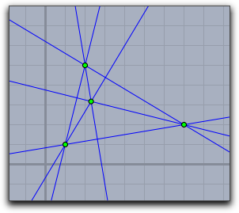
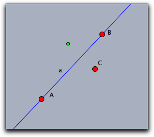

[a,b,c] が、方程式 ax+by+c=0を表します。 点の座標はユークリッド座標(２つの数のリスト [x,y]) か、 または同次座標 (３つの数のリスト [x,y,z] で点 [x/z,y/z])を表す)です。戻り値は常に同次座標です。以下の説明の中では、特に断りなく、点の形式の引数は <point>で、直線の形式の引数は <line> で表します。<point> と <line> は両方とも３つの数のリストで表現することができるので、両者を区別する方法が必要になります。内部的には、リストは、それが幾何学的にどのような意味を持つのかというフラグを持っています。その情報は、 geotype(<list>) 演算子で得ることができます。この演算子は、 "Point", "Line", "None" のいずれかを返します。ベクトルが持つ幾何学的な意味に応じて、 draw 演算子は対応する図形を描きます。meet(<直線1>,<直線2>)join(<点1>,<点2>)parallel(<点>,<直線>)parallel(<直線>,<点>)para(...) と略すこともできます。perpendicular(<点>,<直線>)perpendicular(<直線>,<点>)perp(...) と略すこともできます。A=[1,1]; B=[2,5]; C=[7,2]; a=join(B,C); b=join(C,A); c=join(A,B); ha=perpendicular(A,a); hb=perpendicular(B,b); hc=perpendicular(C,c); X=meet(ha,hb); drawall([a,b,c,d,ha,hb,hc,X,A,B,C]);
 |
perpendicular(<リスト>)perp 演算子の引数が、２つの数からなるリスト１つだけとします。その場合は、リスト [a,b] は [-b,a] に変換されます。それは、もとのベクトルを 90° 回転したものです。area(<点1>,<点2>,<点3>)det(<ベクトル1>,<ベクトル2>,<ベクトル3>)<ベクトル1>, <ベクトル2>, <ベクトル3> からなる 3 × 3 行列の行列式を計算します。ベクトルと行列 の節にある一般的な行列式と異なり、この方法はパフォーマンスが優れています。cross(<ベクトル1>,<ベクトル2>)geotype(<リスト>)"Point", "Line", "None" のいずれかです。"Point"を返します。3つの数からなるリストに適用した場合は、このリストの内部フラグによって "Point", "Line", or "None" のいずれかを返します。シンデレラで描画した幾何オブジェクトであれば、常にそのフラグを有しています。 meet 演算子の戻り値は常に "Point" です。 join, parallel, perpendicular 演算子の戻り値は常に "Line"です。さらに、幾何学的意味は line と point 演算子によって明確に設定することができます。point(<ベクトル>)"Point"として位置づけます。引数が３つの数からなるベクトルでなければ無効です。line(<ベクトル>)"Line" として位置づけます。引数が３つの数からなるベクトルでなければ無効です。complex(<点>)[a,b] は複素数 a+i*bに変換されます。gauss(<点>)a+i*b を２つの数のリスト [a,b] に変換しますcrossratio(<ベクトル>,<ベクトル>,<ベクトル>,<ベクトル>)crossratio(<数>,< 数 >,< 数 >,< 数>)linereflect(<直線>)m=linereflect(a); draw(m*C.homog);
 |
pointreflect(<点>)<点> に関する対称点を求める行列を返します。map(<点1>,<点2>)map(<点1>,<点2>,<点3>,<点4>)map(<点1>,<点2>,<点3>,<点4>,<点5>,<点6>)map(<点1>,<点2>,<点3>,<点4>,<点5>,<点6>,<点7>,<点8>)
Page last modified on Wednesday 07 of March, 2012 [10:47:08 UTC].
The original document is available at
http://doc.cinderella.de/tiki-index.php?page=Geometric%20OperatorsJ